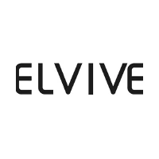

Insumos médicos y textiles hospitalarios en Colombia
Desechables, material de curación, medias de compresión y textiles médicos para clínicas, consultorios, cuidadores y pacientes.
- Atención y cotizaciones por WhatsApp
- Envíos a todo el país
- Precios especiales por volumen
Explora nuestras categorías
Desechables y material de curación
Nuestras marcas

Tienda online de insumos médicos en Colombia
En Medical Investments R.M. encuentras insumos médicos de uso diario: desechables como motas y batas, material de curación, medias de compresión en algodón y bambú, y textiles médicos de referencias variadas. Revisa siempre las indicaciones del fabricante y consulta a tu profesional de salud ante cualquier duda.

¿Cómo elegir el insumo adecuado?
Compara presentación, talla y uso previsto. Si necesitas ayuda para elegir la referencia correcta o cotizar para una clínica o consultorio, nuestro equipo te asesora por WhatsApp.
Preguntas frecuentes
¿Qué insumos médicos puedo comprar?
Desechables (motas, batas), material de curación, medias de compresión y textiles médicos.
¿Hacen envíos a todo el país?
Sí, despachamos a todo el país y coordinamos el envío por WhatsApp.
¿Puedo cotizar por volumen?
Sí, escríbenos por WhatsApp y te enviamos una cotización para clínicas, consultorios e instituciones.
¿Necesitas una cotización por volumen?
Clínicas, consultorios e instituciones: te asesoramos y cotizamos por WhatsApp.